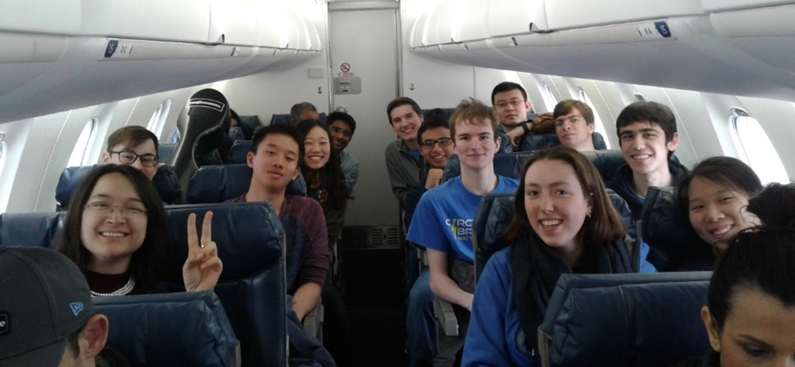

I have served on the AHS Committee at Olin since 2000, e.g., chairing the AHS Search Committee in 2000 when we hired Prof. Robert Martello whose field is History of Science and Technology. I created AHS courses—both disciplinary and interdisciplinary—specifically designed for the Olin student and helped incorporate effective written communication into our AHS Foundation Courses, with particular emphasis on evidence-based analysis.
Not wanting to redefine what already existed at our neighboring partner institutions, I designed courses that spoke directly to the Olin student. For example, the Olin Conductorless Orchestra (OCO) is the only orchestra composed entirely of student engineers in the nation—and it functions without a conductor, on purpose. The Wired Ensemble takes engineers on a tour of the orchestra, including voice. After learning about each family of instruments, they write music for these instruments and voices. In both these disciplinary courses, students learn by doing, supported by the three overarching themes that pervade my work (Map 3).
The below music courses bring “balance”, “creative energy”, and “emotional connection” to our students (their descriptors), not only developing the “whole person” which Prof. Lynn Andrea Stein often spoke about in the first year of the College (AY 00-01), but also displaying these traits to prospective students and their families, as seen in the “Music Program Impact” video links given in the Building a Music Program from Scratch page. These short videos conveying the scope and impact of the music program show that Olin doesn’t just talk the talk, but walks the walk.
These courses have also brought musical opportunities for Babson and Wellesley students. For example, we were fortunate to have Stella Joo as a clarinetist in OCO during her four years at Babson College. She wrote the following letter upon graduating Babson:
Hi Diana,
I visited your office on Friday morning, but you must have stepped out for a moment when I was there. I didn't get to see you in person, but I just wanted to thank you one more time for the great experience I had with OCO. My college experience would not have been the same without OCO and your support along the way. It was a great way to explore and learn beyond the "business bubble" I had on Babson campus. I have always played music since I was young, whether it be a piano, a violin, or a clarinet, and I am so happy I had the opportunity to continue playing music in college. I am hoping to find an amateur orchestra in the Northern Virginia or DC area to join so I can continue to have music as part of my life even when I start work in September. Although I didn't get to play in an orchestra while I was in Singapore, there were so many opportunities to attend concerts throughout the semester, one of which was hosted by Singapore Symphony Orchestra with a guest pianist from Japan playing Rhapsody in Blue! Thank you so much for the past four years and I would love to keep in touch. I hope you have a wonderful summer.
Best,
Stella Joo
What in the life of an Engineering School makes a conductorless orchestra possible?
Firstly, a universal call throughout industry for engineering graduates who can work well in teams, assume, leadership, and communicate effectively. At Olin, these were founding precepts of the College. During the first week of meetings in Fall 2000 when Olin’s Founding Faculty of 12 sat together and started discussing possible avenues for the curriculum, these three professional skills were front and center.
They were weighted heavily because the National Academy of Engineering and industry were insisting that engineers of the 21st century be multi-dimensional, i.e., comfortable not only with working on multidisciplinary projects in large global teams but also poised to assume leadership and communicative roles. Much more would be expected and demanded of 21st century engineers than what had previously sufficed due to globalization and the exploding tech revolution.
Secondly, a well-known, if anecdotal, truism across many nations is that students gifted in math and science are often talented in music. Citing this, the Olin College Dean of Admission’s first question to a newly hired Assistant Professor of Electrical Engineering and Music during the summer of 2000 was, “Okay, where’s the Olin Orchestra?” This wasn’t on my “to do” list nor in my contract. But the new Dean, Dr. Charles Nolan, had researched Engineering Admissions, concluding that an orchestra would be essential for a college that did not exist yet because of the often-observed math/music connection. (N.B. Olin’s inaugural class of students matriculated in the fall of 2002 and graduated in 2006.) But instead of a conducted orchestra, I wondered if it made more sense for our new college to create a conductorless orchestra, given the call for engineers who can work in teams, and communicate effectively, both of which are essential for good leadership.
A conductorless orchestra is first and foremost a large team collaboration by individuals working toward a high performance goal. By design, no overarching figure exists to sculpt an interpretation and pull the performance together. Rather, the members themselves bring the concert to fruition. Such an orchestra exerts singular demands on each individual during rehearsals and performances: the musicians must actively listen to their parts within the context of a larger whole and adjust accordingly, without being told by a conductor.
So what does a conductorless orchestra offer an engineering school?
In short, an experiential project-based learning lab for developing 21st century professional skills, i.e., leadership, teamwork, and effective communication.These professional skills will be discussed further in The Engineers’ Conductorless Orchestra.
How does the Olin Conductorless Orchestra develop students?
OCO is the only conductorless orchestra composed of engineers—in the world. It features engineering students in leadership, teamwork, and communicative roles. Dedicated to performing the symphonic literature in the concerted spirit of chamber music, the orchestra forges individual participation, active listening, and group-motivation into performances that have established it as a singular ensemble. With an essentially flat hierarchy that incorporates an ever-evolving sense of culture and cooperation as a working ensemble, OCO functions as an effective team of musicians—regardless of position—comprising students, faculty, and external guests, all dedicated to making the best music possible. As a result, everyone pulls their weight, especially necessary in an orchestra of 10-22 players where each instrumentalist is often carrying a line intended for many. Thus, every musician is both soloist and ensemble player.
As an academic course at Olin, OCO works on the project-based learning (PBL) model: students effectively operate the classroom, tapping their own intrinsic motivation, and I function as a professional guide-on-the-side. As the faculty guide, I play several roles with responsibilities similar to those described by Wilfred Drath and Charles Palus in Making common sense: Leadership as meaning-making in a community of practice. These can be summarized as doing whatever it takes to help the ensemble reach its goals and maintain standards.
The members of the orchestra fill various roles such as ‘rehearsal leaders’, ‘navigators’, and ‘transcribers’. In the past, each student signed up as a rehearsal leader for two rehearsals per semester. Rehearsal leaders helped set the agenda for the upcoming rehearsal in conjunction with the navigators and faculty guide. But students decided to discontinue this practice in 2022. Since then, the navigators and I have set the agenda for each rehearsal.
Section leaders emerge by consensus from each of the string, wind, brass and percussion sections. The two navigators, elected by the full orchestra as overall leaders, work with me to ensure rehearsals run smoothly and communication lines stay open within the group. For each new piece selected by OCO, student transcribers input the original score into Sibelius, a music notation program. I then re-orchestrate the original score to suit OCO’s instrumentation for any given semester. Each re-orchestration (orchestral arrangement) re-designs a work for a different set of instruments. This is necessary because the students often select works originally written for orchestras with 90+ players. Thus, these pieces have to be re-composed for much smaller ensembles of 10-22 musicians playing an eclectic array of instruments (see Orchestral Arrangements). Because I’m aware of the capabilities and aspirations of each member of the orchestra, I’m able to tailor the re-orchestrations to the strengths and motivation of individual players and the orchestra as a whole.Since Fall 2006, I’ve brought in external guests—musicians external to Olin who play professionally in the Boston area—so that student musicians hear additional perspectives on the music at hand. OCO musicians work together with the navigators, transcribers, faculty guide, and external guests to create a meaningful musical experience not only for the orchestra but also for its audiences.
“Just in time learning” is delivered by the rehearsal leaders, orchestra members, as well as the faculty guide and external guests—all of which provide preparation/scaffolding. Students select their own repertoire before any music is learned which enhances their motivation to play the music well, e.g., schedule individual practice. (In conducted orchestras, the conductor often selects repertoire). Students offer feedback via effective oral communication on the rehearsal process in real time, and via email in preparation for the next rehearsal. The musicians work in one large group comprising all sections of the orchestra—winds, brass, strings, and percussion—as well as in smaller group sectionals consisting of a single instrumental family (e.g., a string sectional, wind sectional, etc.), or sectionals comprising high, mid, and low instrumental registers. Students teach one another since each brings a level of expertise to the music-making process.
The following analogies can be made between the conductorless orchestra ‘lab’ and a hands-on engineering lab. As preparation for the hands-on lab (i.e., application via an upcoming performance), students take a Pre-Lab test (individual practice to learn parts), assimilate just-in-time learning (listen to recordings and analyze the music), complete a Virtual Lab (rehearse the music) and hands-on lab (concert performance).
As a final step in the hands-on lab, students take a Post-Lab test. This corresponds to the orchestra listening to the concert recordings and dedicating follow-up rehearsals to address issues that require additional work in preparation for the next performance. In essence, this revision process guides musical growth, thus providing stimulation/impetus.
In collaborating with each other, sometimes intensely and often with humor, the orchestra has risen to higher levels since its inception in fall 2002. OCO has been able to rise to these higher levels due to an appreciation for leadership, skill, compromise, dialog, and respect for others. Furthermore, the students in OCO have consistently included some of Olin’s finest engineers, mathematicians, and scientists, as observed by other faculty.
Why is the Olin Conductorless Orchestra important for Olin College?
OCO is Olin’s oldest music ensemble and provides an enduring example of what our college represents. The orchestra has been a vehicle for talented students studying engineering since 2002, and shows the Renaissance side of their education. It has helped build & sustain the College by attracting excellent students (as remarked by faculty) through its visible performances for internal and external constituencies: 143 concerts, Fall 2002 – March 6, 2020. Two online events, 2021. One online event plus 21 live concerts Fall 2021 - Spring 2024.
Some significant changes include those we made to OCO for Fall 2012 (including a new Action Plan and Group Auditions) that led to a contagious esprit de corps. OCO attracted additional instrumentalists during AY13-14, including first-years, an excellent clarinetist from Babson College, and Olin seniors. This trend continued in AY14-15 and AY 15-16, at which point I realized it was time to take OCO on the road so students could experience playing in venues outside Olin College. We started with Powers Hall at the Needham Town Hall in Fall 2016, followed by the Great Hall of the Cooper Union in New York in Spring 2017, the Mount Pleasant Retirement Home in Brookline in Spring 2018, and OCO’s first jet ride to perform at the ASEE (American Society for Engineering Education) Zone 1 International Conference in Niagara Falls in Spring 2019, captured below.
Figure 1: 2019 OCO students aboard Delta flight 5319 en route to Buffalo International Airport.
My role in a conductorless orchestra
I created the Olin Conductorless Orchestra to give our new school a bold variation on the collegiate student orchestra—an orchestra that is self-directed. Its longevity and success have depended not only on a lasting commitment on my part, and that of our students, but also on the many skills I bring to its rehearsals and performances. OCO continually taps all musical parts of me: the concert pianist who knows how to craft, rehearse, and project an interpretation; the theorist who can support that interpretation by reasoning from a deep understanding of harmony and counterpoint; the orchestrator who has professionally performed all musical styles from the Baroque to modern times, applying this experience to the creation of stylistically-consistent orchestral arrangements; the composer whose imagination can conjure up novel orchestral arrangements of works written for orchestras four times our size, thus creating a coherent group sound despite an eclectic, unbalanced array of instruments; and the musician who can hear when things go awry and fix them on the spot, devising productive solutions, sometimes minutes away from performance time. As I’ve done for the past 22 years, I’m dedicated to furthering OCO’s impacts on both its students and audiences.
The following are two short performance clips of OCO from 2014 and 2018, as well as earlier performance clips from 2003-05 to show growth of the orchestra.
OCO performing Dvorak's Eight Symphony at the May 2014 Olin Exposition. They demonstrate the teamwork and communication enabling all to lock in for the exciting accelerando to the end.
OCO performing the Schumann First Symphony in Spring 2018.
The 2018 recording shows how much the orchestra has grown since its formation in fall 2002 with five students and myself at the piano. In the early years of the college, OCO performances had to include sizeable piano parts, as can be heard in the below 2003-05 performance clips. These large piano parts were necessary: they provided the glue bridging drastically unbalanced orchestral sections. For example, in fall 2003 we had four trombones and only one violin!
As will be discussed more fully in The Engineers’ Conductorless Orchestra, a conductorless orchestra can serve as an experiential lab for developing leadership, teamwork, and communication skills in engineering students.
For more OCO YouTube performances, including complete recordings of works by Haydn, Mozart, Berlioz, Dvorak, Gershwin, Arturo Marquez, and others, please see the example performances displayed in The Engineers’ Conductorless Orchestra.
As an AHS Foundation course in music, the Wired Ensemble must meet certain criteria that we have developed as an AHS faculty. Chief among these is written communication, especially analytical writing based on close reading, thesis development, and evidential support for a given thesis. In this Foundation course, students simultaneously pursue composition with music and composition with text, including story/narrative writing.
What’s special about the Wired Ensemble? Is it the only music composition course in the nation where engineering students who have never composed music study orchestration and then compose for those instruments and voices? Probably. Is it the only music composition course in the nation where students apply analytical music composition tools—such as motivic development—not only to their pieces but also to the works of masters? I hope not!
The Wired Ensemble cycles through a new instrumental family every two weeks. There are four 100-minute classes devoted to each family or group of instruments: woodwinds, brass, strings, and percussion/voice.
For each instrument family, students provide feedback on one another’s compositions and receive feedback and other forms of scaffolding, e.g., guided learning materials that encourage self-teaching, as well as individual sessions with me where I play their pieces at the piano, giving feedback (pro and con). For the latter, I improvise solutions for any ‘problem’ areas by first explaining what the problem is, followed by ways to solve it. Students then revise their work in preparation for a live performance class that features other student musicians as performers of their compositions. In this way, students not only hear their original compositions on live instruments but also gain firsthand experience about what works well (and perhaps not so well) based on feedback from performers, peers, professor, and their own ears. To give students useful tools for composition, we build a Composer’s Toolkit. Each week I stuff the Toolkit with new compositional tools and demonstrate these at the piano using a number of musical examples culled from the literature. These tools help students advance their own compositional and creative processes. To reinforce the Toolkit, I developed a series of “Creative Inquiries” where students apply, and gain experience with, useful compositional techniques (stimulation/impetus and application) such as motivic development. By the end of eight weeks, students are ready for a “longer rope”: they compose their “dream piece”, that piece they’ve always wanted to write, thus tapping intrinsic motivation. Continuing to stuff the Wired Composer’s Toolkit, I now present techniques associated with the concept of Developing Variation, e.g., linkage, thematic transformation, metrical displacement, and motivic development. These techniques find their way into students’ Final Project pieces (again, stimulation/impetus and application) which are featured in the Wired Ensemble Event concert during Olin’s December Exposition (Fall Expo). The Composer’s Toolkit pervades other aspects of the course, especially written communication. Students write short analyses of their own pieces, then a longer analysis paper on “Beethoven’s Creative Process: peering into an 1803 sketchbook.” We conclude with written personal narratives about their connection to music and/or an analysis of a text written by Beethoven, e.g., the Immortal Beloved letter or his Heiligenstadt Testament. For written assignments, students can make the connection between musical composition tools and literary composition tools. Analogies abound, e.g., musical articulations ↔ textual punctuation, non-harmonic tones ↔ diction (word choice), and so on.
In sum, as a disciplinary course in music, the Wired Ensemble develops students through three overarching themes of lifelong learning, intrinsic motivation, and the creative process (encompassing stimulation/impetus, preparation/scaffolding, application, feedback, revision, and effective communication). As an AHS Foundation course, it has contributed to the AHS curriculum and helped build the student body by attracting prospective students through its many performances (88 concerts, Fall 2003 – Spring 2024, plus 2 online events during the pandemic).
An overview of performance clips from the Wired Ensemble composition course, 2013-2018.
[these should be in Appendix II-A-2] Scores and the program can be found here.
As a result of my funded Babson-Olin-Wellesley Presidential Innovation Grant (“Mix and Stir”, part 2), Wired Ensemble students had the opportunity to hear their works performed live by a Wellesley College faculty trio (Gabriela Diaz, violin; David Russell, cello; and Lois Shapiro, piano) on December 5, 2017. (I had hoped to include student compositions by Wellesley music students as well, but they were at work on other projects, so only Wired Ensemble works were performed.)
The following is a video of “Wired in Series”, the resulting performance of the ten short student compositions that was funded by the “Mix and Stir” grant, a Babson-Olin-Wellesley (BOW) Presidential Innovation Grant Award. None of the students had composed music before taking this course.
Figure 2: The 2018 Wired Ensemble after performances of their final project compositions during Olin’s December Expo.
For additional material from the Wired Ensemble class, including example assignments and student work, see the links below.